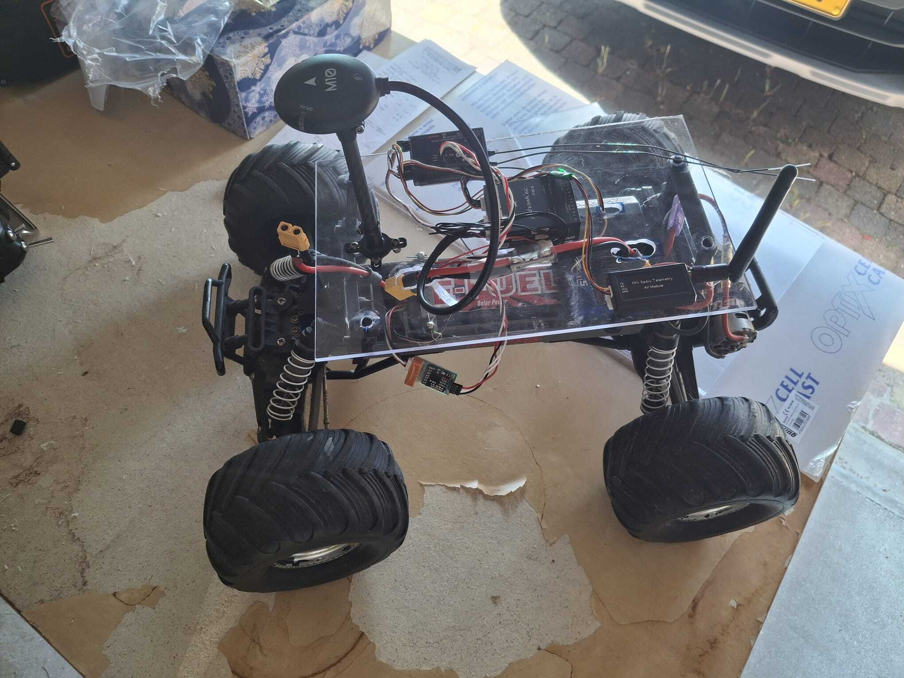

Why I Build Things That Simulate Reality
From orbital simulations to RC car experiments, I've always been obsessed with making virtual things behave like their real-world counterparts. There's a certain magic in capturing the physics of the universe—gravity, friction, thermodynamics—in lines of code. It's like building a pocket universe with its own set of rules.
A good simulation isn't just a predictive tool; it's a playground for understanding. You can ask "what if?" a million times without consequence. What if the engine nozzle was 5% wider? What if the material was less dense? Each run is an experiment, and each result deepens your intuition about how the world works.
My recent project, the Human-Like RC Car, embodies this philosophy perfectly. By capturing real-world motion patterns in a programmable platform, we created something that bridges the gap between abstract simulation and physical reality. It proves that good virtual models can translate directly into practical tools.
This interplay between code and physics continues to fascinate me. Whether I'm working on rocket propulsion simulations or robotics projects, the goal remains the same: to create digital reflections of reality that help us understand and interact with the world in new ways.